02.07.2026 — работа по Sarbon Frontend сразу в диспетчерском приложении и админ-консоли. Чат: пузырёк сообщения-звонка теперь показывает длительность, ставит входящий/исходящий на правильную сторону (по payload.direction, а не по sender_id) и красит иконку по статусу (зелёный «завершён», красный «отменён/отклонён»). Аудиозвонки: при локальном обрыве звонка модалка больше не пропадает, а остаётся открытой с рабочей кнопкой «Завершить» — пользователь больше не «залипает занят». Админ: вкладка «Менеджеры» в модерации получила кнопки «Принять»/«Отклонить» (паритет с грузом и водителями). Груз: на детальной странице груза добавлен контрол «деактивировать / вернуть в поиск» с обязательной причиной. QA: прогон чат-пузырька (0 находок) и переоформление Allure-отчёта под «Sarbon Frontend».
| Область | Что было / причина | Что сделано | Файлы |
|---|---|---|---|
| Чат — пузырёк звонка bug закоммичено |
Пузырёк сообщения-звонка не показывал длительность; входящий/исходящий всегда рендерились на «моей» стороне (реальные данные: sender_id одинаков для обоих направлений), иконка не отражала статус. | Длительность («N мин. NN сек.») из payload.duration_seconds; сторона — по payload.direction (payload-first, тело как fallback); статус-цвета: зелёный PhoneCall для «завершён», красный PhoneOff для «отменён/отклонён». | chatCallEvents.ts, MessageBubble.tsx, ChatThreadPanel.tsx, chatTypes.ts, locales ×15 |
| Аудиозвонки — устойчивость к обрыву bug в рабочем дереве |
При локальном сбое звонка cleanupCall('error') очищал всю сессию, и модалка закрывалась — при этом серверный звонок мог быть ещё ACTIVE. Пользователь «занят» без кнопки «Завершить». | preserveSession сохраняет идентичность звонка на ошибках; модалка остаётся (isCallActive для error && callId) с рабочим «Завершить»; опрос в состоянии error не «оживляет» медиа, терминальный ответ сервера полностью очищает. Добавлен статус «Ошибка звонка» (ключ callError, розовый индикатор). | GlobalAudioCallModal.tsx, ChatThreadPanel.tsx, locales ×15 |
| Админ — модерация менеджеров feature в рабочем дереве |
Вкладка «Менеджеры» (CM/DM) в модерации была только для чтения — без действий, с явным «read-only» алертом, тогда как грузы и водители (KYC) уже имели accept/reject. | Добавлены «Принять» (пустой POST) и «Отклонить» (модалка с обязательной причиной), как у водителей. Действия гейтятся предикатом canModerateDispatcher (нельзя повторно модерировать решённые строки). Read-only алерт убран. | ManagerModerationPanel.tsx, dispatcherModeration.ts (+тест), endpoints.ts, locales ×15 |
| Груз — деактивация / возврат в поиск feature закоммичено |
У груза в поиске не было способа временно скрыть его из выдачи (и вернуть обратно) с указанием причины. | Контрол «деактивировать / активировать» на детальной странице груза: груз в поиске можно скрыть, деактивированный — вернуть в поиск. Обязательная причина из справочника (или свободный текст для «Другое», лимит 500 символов); системные причины отфильтрованы. | CargoDeactivationControl.tsx, cargoDeactivation.ts (+тест), cargoStatus.ts, MyCargoDetailPage.tsx |
| QA — прогон и Allure-отчёт infra | Прогон чат-пузырька был прерван на этапе сборки Allure-отчёта; сам отчёт был брендирован как «Admin Console». | Достроен Allure-отчёт из прогона (4 теста, все passed, 0 реальных ошибок консоли); переоформлен под «Sarbon Frontend», добавлены 2 паттерна безобидного шума консоли (kebab-SVG, uncontrolled-input) для диспетчерских страниц. | qa/allure-from-run-filtered.mjs, qa/reports/…chat-call-bubble.md |
// src/components/shared/GlobalAudioCallModal.tsx - const isCallActive = status !== 'idle' && status !== 'ended' && status !== 'error' // error → модалка закрывалась + const isCallActive = status === 'dialing' || status === 'incoming' || status === 'connecting' + || status === 'connected' || (status === 'error' && Boolean(callId)) // остаётся, пока жива сессия → есть «Завершить» // на всех локальных ошибках: - cleanupCall('error') // очищало callId → «залипание занят» + cleanupCall('error', { preserveSession: true }) // сессия сохранена, модалку можно завершить
Записи внесены 02.07.2026 в bug.md (корень репозитория). Деактивация груза — функция, отдельной bug-записи не имеет (закоммичена в 6fe53d78).
Скриншоты чата сделаны в живом приложении на staging под диспетчерской авторизацией (реальные сообщения-звонки из бэкенда). Скриншоты админ-модерации — живой прогон под админ-авторизацией. Модалка «Ошибка звонка» — рендер реального компонента GlobalAudioCallModal в состоянии error (временный сид, откачен после съёмки), т.к. живой обрыв WebRTC не воспроизводится по требованию.
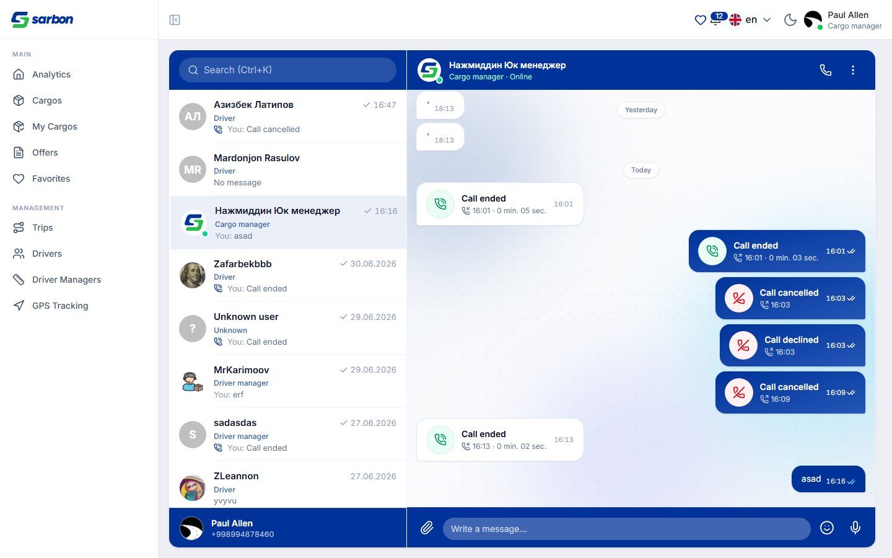
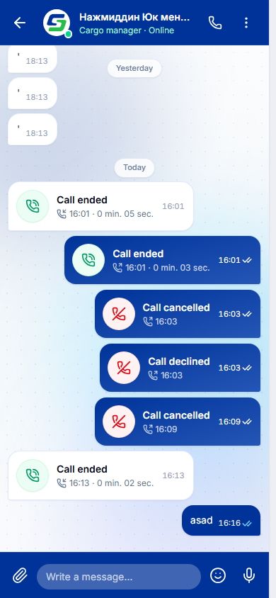
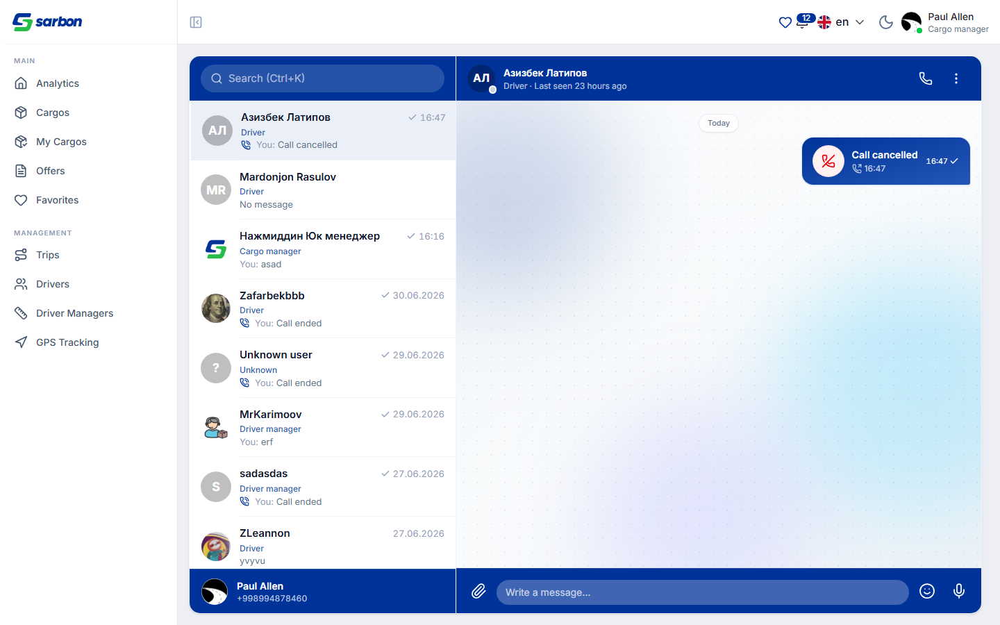
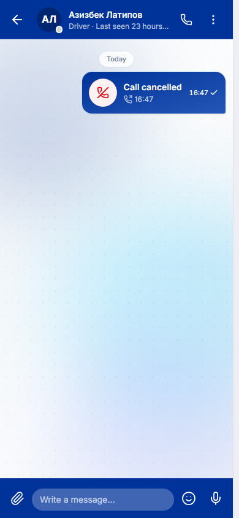
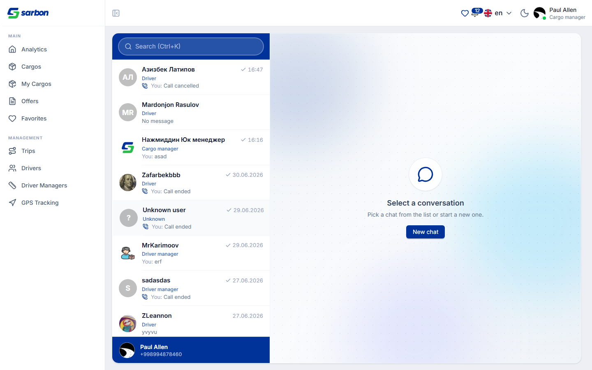
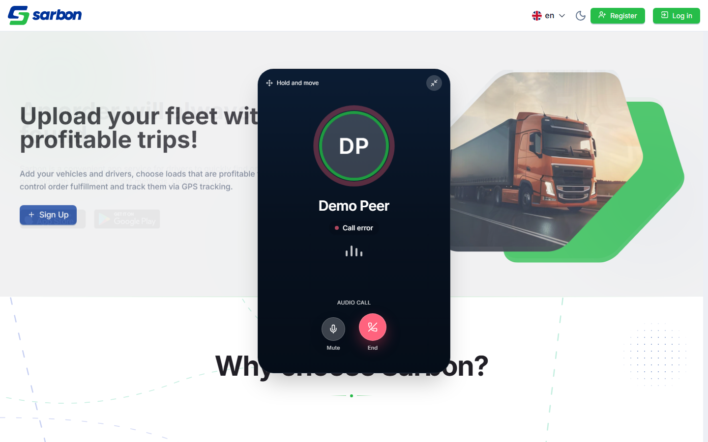
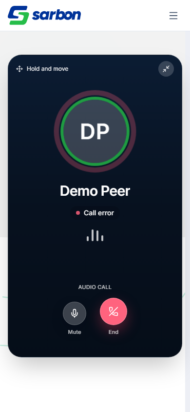
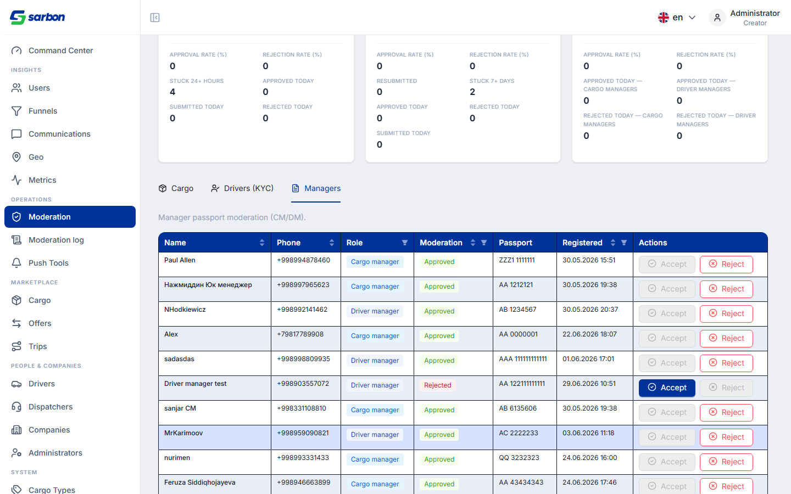
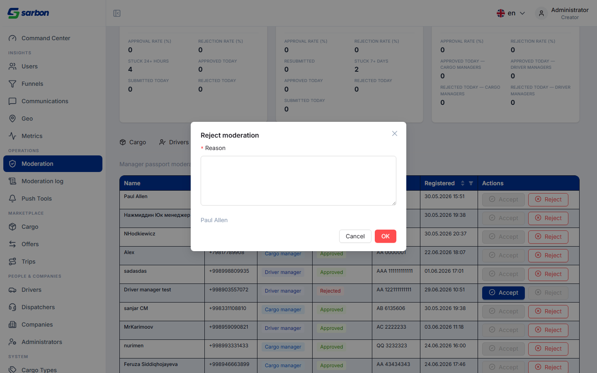
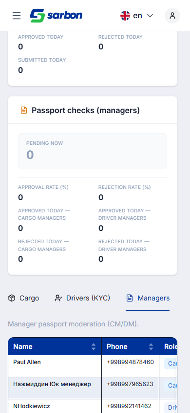
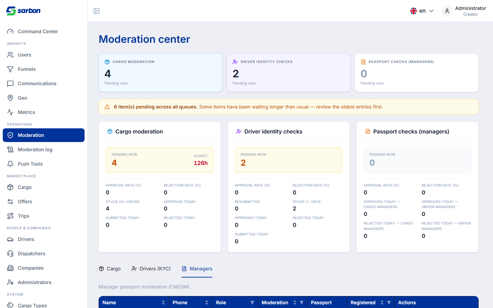
| Артефакт | Путь |
|---|---|
| Журнал исправлений (записи 02.07) | bug.md (15:48, 16:33, 17:25, 17:38) |
| Краткая сводка для PM (Excel) | daily-report/02.07.26/report-02.07.26.xlsx |
| Чат: логика пузырька звонка | src/pages/chat/utils/chatCallEvents.ts · components/MessageBubble.tsx · ChatThreadPanel.tsx |
| Звонки: модалка + сохранение сессии | src/components/shared/GlobalAudioCallModal.tsx |
| Груз: контрол деактивации | src/pages/cargos/my-cargo-detail/components/CargoDeactivationControl.tsx · src/utils/cargoDeactivation.ts |
| Админ: модерация менеджеров | src/pages/admin/moderation/components/ManagerModerationPanel.tsx · dispatcherModeration.ts |
| QA-отчёт чат-пузырька + Allure | qa/reports/qa-report-2026-07-02-chat-call-bubble.md · qa/allure-from-run-filtered.mjs · allure-report/ |
| Скриншоты (11 шт.) | daily-report/02.07.26/img/ |
| Отчёт предыдущего дня | daily-report/01.07.26/index.html |